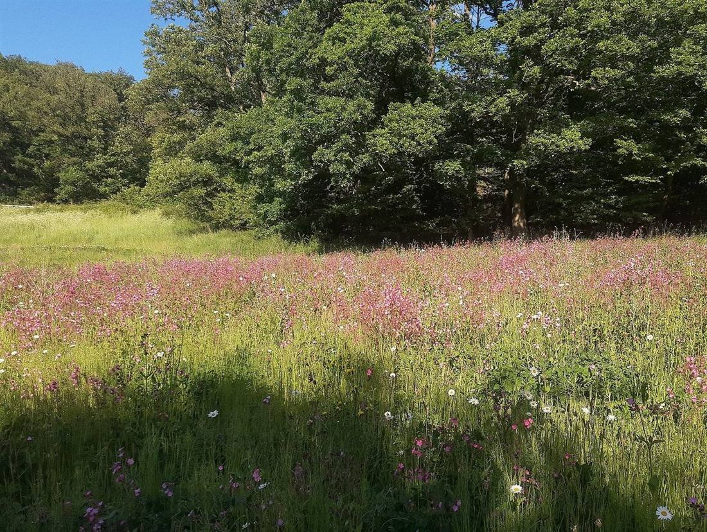
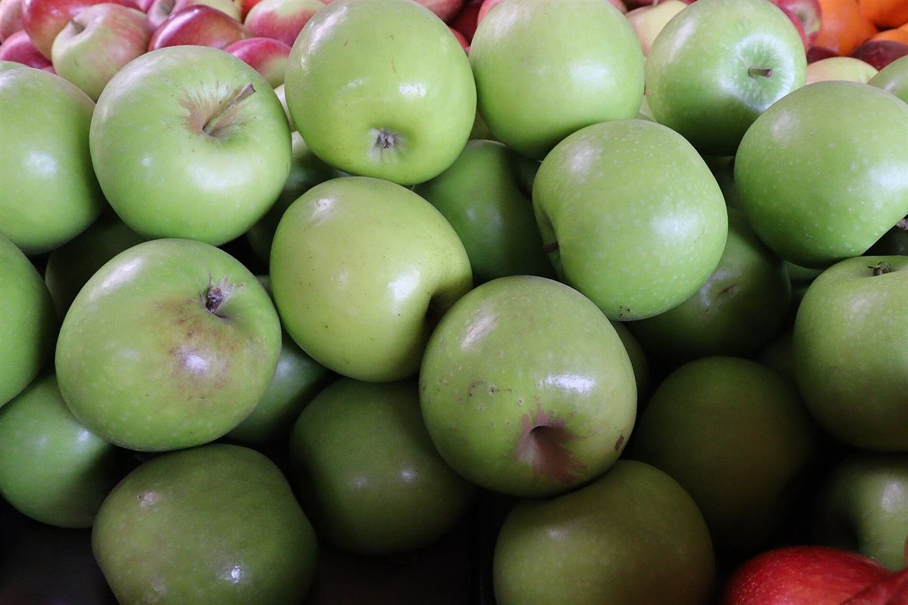
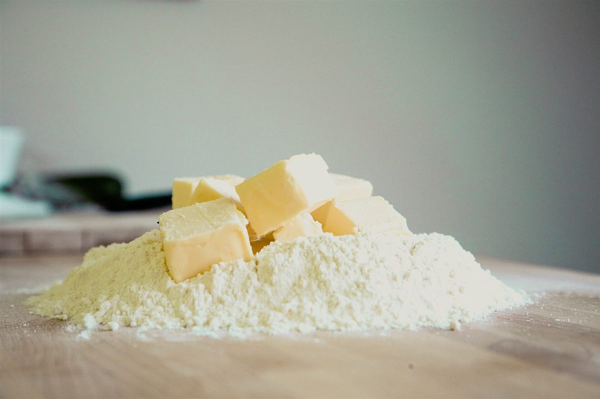
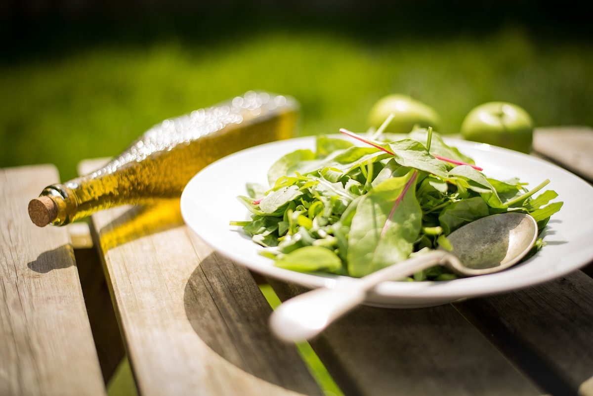
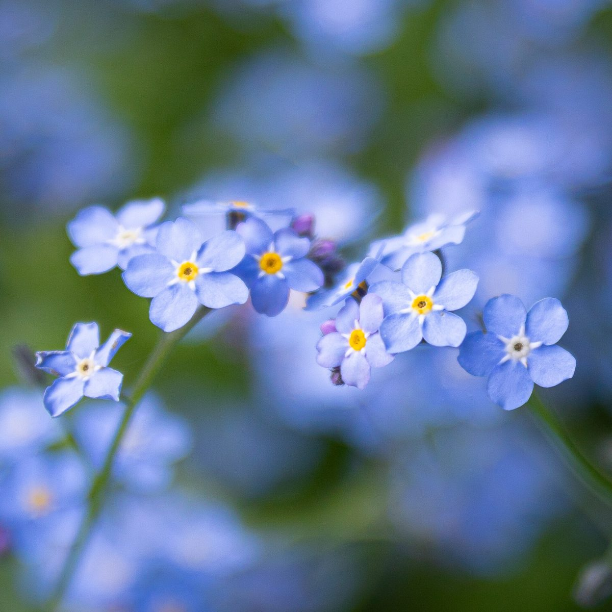

制作側の連想
四輪歩行器の部位を、配置図にしてみる
四輪歩行器の部位を図にしたもので、制作側の連想です。お店の理念・由来とは無関係で、実際の製品の仕様を示すものでもありません。 六つの部位に番号をふり、上の図と並べています。
凡例
六つの部位
- 1ハンドル体をあずけて握る横の棒で、押して進むときの手がかり。
- 2ブレーキレバーハンドルのそばについた握り棒で、引くと車輪が止まる。
- 3座面立ちどまって休むときに腰かける、フレームの中ほどの板。
- 4前輪前側の小さめの車輪で、向きを変える役目を受けもつ。
- 5後輪後ろ側の大きめの車輪で、進む向きをそろえる。
- 6収納バッグ座面の下に吊るして、荷物を入れておく袋。
写真(イメージ)
写真(イメージ)






写真はイメージです。お店のものではありません。
ご案内
お店のこと(確認できたものだけ)
| 所在地 | 〒399-8303 長野県安曇野市穂高５６３９−１ |
|---|---|
| 電話 | 準備中 |
| 営業時間 | 準備中 |
| 定休日 | 準備中 |
| ご予約 | 準備中 |
| 駐車場 | 準備中 |
| SNS | Instagram @paysage_nojiri |